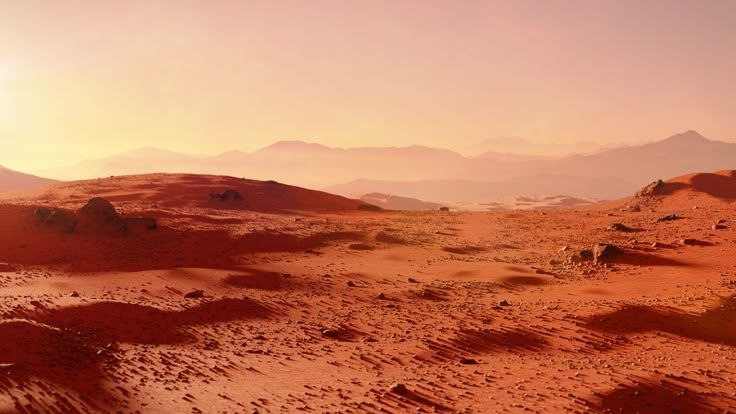
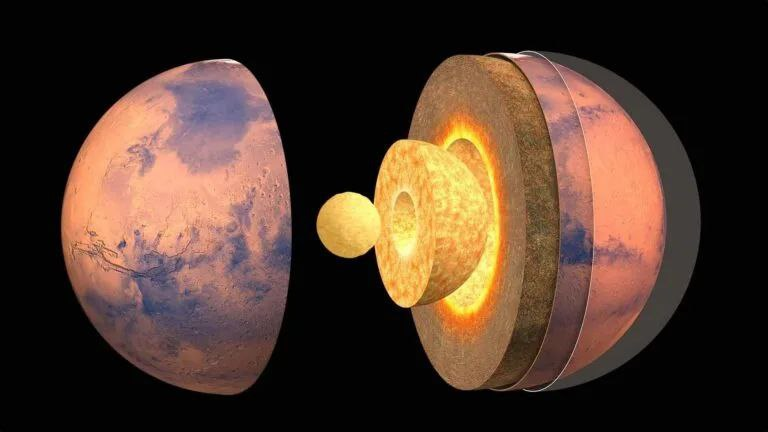

MARS
The fourth planet from the Sun

အရွယ်အစား
6,779 km
တစ်နေ့ကြာချိန်
24h 37m
အပူချိန်
-65°C
လများ
2 Moons
Mars သည် Solar System ထဲတွင် Sun မှ စတုတ္ထမြောက်အကွာအဝေးရှိသော ဂြိုလ်ဖြစ်သည်။ Mars ကို “Red Planet” ဟုခေါ်ကြခြင်းမှာ ၎င်း၏ မြေပြင်တွင် သံဓာတ် (iron oxide) များကြောင့် အနီရောင်ပေါ်နေခြင်းကြောင့် ဖြစ်သည်။ Mars တွင် အလွန်ပါးသော လေထုရှိပြီး အဓိကအားဖြင့် ကာဗွန်ဒိုင်အောက်ဆိုဒ် (CO₂) ဖြင့် ဖွဲ့စည်းထားသည်။ အပူချိန်များသည် အလွန်အေးပြီး ပျမ်းမျှအားဖြင့် -60°C ခန့်ရှိသည်။ Mars တွင် Phobos နှင့် Deimos ဟုခေါ်သော ဂြိုလ်တု ၂ လုံးရှိသည်။ ထို့အပြင် Mars တွင် Solar System ထဲတွင် အကြီးဆုံးတောင်တန်းဖြစ်သော Olympus Mons လည်းရှိသည်။ သိပ္ပံပညာရှင်များသည် Mars တွင် အရင်တုန်းက ရေရှိခဲ့နိုင်ကြောင်း သက်သေအထောက်အထားများ ရှာဖွေတွေ့ရှိထားကြပြီး အနာဂတ်တွင် လူသားများ သွားရောက်နေထိုင်နိုင်မလားဆိုပြီး လေ့လာမှုများ ဆက်လက်ပြုလုပ်နေကြသည်။

Surface Details
Internal Structureထူးခြားချက်များ
“Red Planet” သည် iron oxide ကြောင့် အနီရောင် ရေရှိခဲ့ကြောင်း သက်သေအထောက်အထားများ ရှိ ဂြိုလ်တု ၂ လုံး (Phobos, Deimos) ရှိ